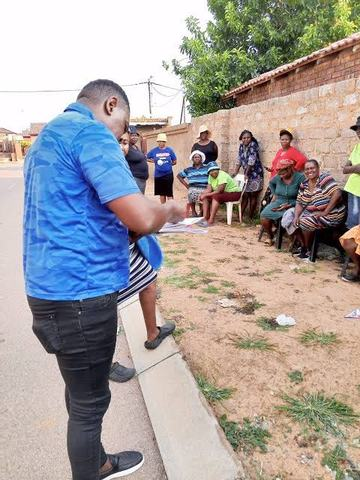
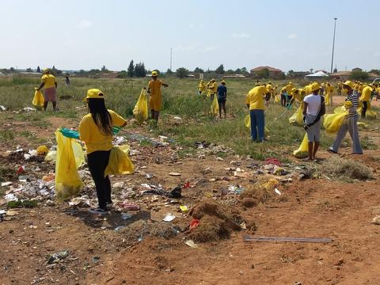
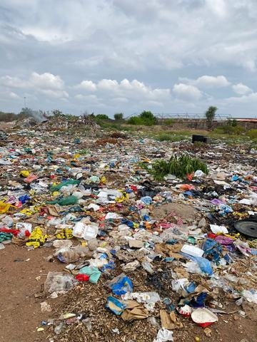
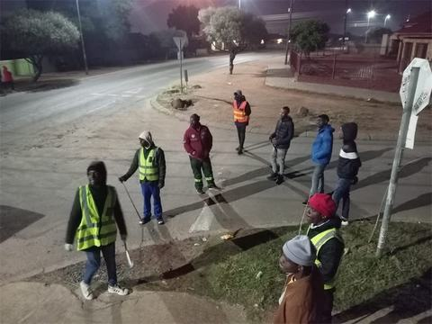
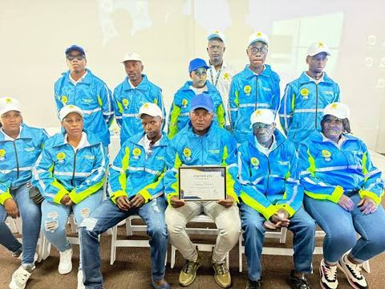
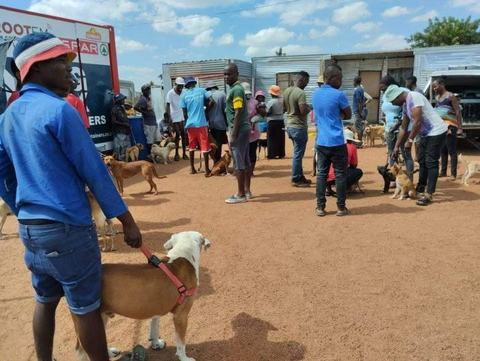
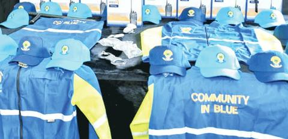
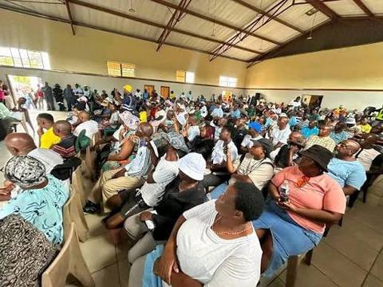
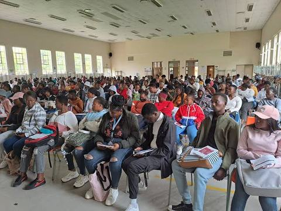

Our story
Started by residents, run by residents

The Forum has over 100 active members across Soshanguve — ordinary residents who have taken it upon themselves to watch out for one another. When a threat appears or a suspect is being dealt with, members currently rely on phone calls, SMS, WhatsApp messages, and, when none of that is possible, physically blowing a whistle or shouting to alert people nearby.
Many of our members are unemployed. That means they're often the ones available to respond when something happens during the day — but it also means many can't reliably afford data or airtime, which is exactly why our current system still depends on whistles and shouting when it matters most.
The problem
Soshanguve's communication gap is a safety gap
Parts of Soshanguve, particularly the Jukulyn section, have been repeatedly flagged by Gauteng officials as facing serious levels of crime. In January 2024, the Gauteng Premier described the crime situation in Jukulyn as alarming, following a shooting that killed four people, including a teenager and an off-duty police officer. Around the same time, police reported over 300 active criminal cases in the area.
Government has already responded with panic-button pilots, CCTV cameras in some blocks, and a dedicated SAPS stabilisation team. These are genuine steps forward — but they are area-specific pilots, not something built around the Forum's own network of over 100 members, and they don't solve the core problem: when data and airtime run out, our only tool left is a whistle.
please note this before volunteering
Our members take real risks to keep each other safe
In March 2025, a group of community patrollers doing a routine safety walkabout in Soshanguve's Marry Me informal settlement were attacked; six patrollers lost their lives and several more were injured. Gauteng's Community Policing Forum has since urged residents not to form unregistered, informal safety groups without proper structure, protection, and training.
This is central to why the Forum wants a digital platform. A website and app that lets members report incidents and send alerts remotely — without needing to physically confront a threat — is a safer way for our community to look out for itself.
Where we're headed
From WhatsApp groups to a purpose-built platform
This website is the first step toward a free safety app for iOS and Android, where every member can create a profile and receive real-time crime alerts. Planned features include incident reporting, community announcements, an emergency button, and live location tracking for anyone who presses it. You can read more about each feature on our Services page.
Photo gallery
The community at work
Photos of Forum members and residents cleaning their streets, patrolling and meeting. Select a photo to see it larger; use the arrow keys to move between photos and Esc to close.
-

Community street clean-up (Block NN) -

Illegal dumping that the community wants cleared (Block SS) - Crime prevention unit members
-

Night patrollers on the street -

Launch of the patrollers in Block KK -

Patrollers meeting with their guard dogs -

Community in Blue safety patrol uniforms - Community volunteers meeting residents in the street
-

Leaders' meeting for a section of the community -

Official launch of the community platform


Photo note: some photos show identifiable people. Permission from the people pictured, and the photographers, still needs to be confirmed by the Forum before the site is published.